This is a case study in how Gamutvision can be used to examine defects in the interior of profiles. When real images are transformed for printing, most of the action takes placen inside the gamut boundary.
IntroductionIt started when I dropped in on Fabio Riccardi, the author of LightZone, a powerful new image editor for Mac and Windows, based on the Ansel Adams' Zone system. I told him about Gamutvision (then newly-released), and he showed me the image on the right, printed on Epson Enhanced Matte paper with the Epson 2200 printer using Epson's standard 2880 dpi ICC profile. Although most of the image printed OK, the pine trees to the right of the river were severely smudged (below right). "Explain this," he said. "Your printer is hosed," I replied. "The nozzles are fouled up." |
|
Then he showed me the soft proof preview, shown on the right, below. The smudging clearly visible on the screen was identical to the smudging in the print. The printer was working perfectly. The problem was tonal rather than spatial; the culprit was clearly the ICC profile: the file that controls the bits sent to the printer. The problem takes place in the interior of the gamut volume, not on the surface, which represents the most saturated possible colors, and which is what most gamut viewers display.
Original image, shown with sRGB profile. |
Soft proof: Epson ICC profile for 2200 printer, Enhanced Matte, 2880 dpi, Relative Colorimetric, Black Point Comp. off. |
The smudging is apparent on a crop of the image in Gamutvision's Image Color difference display, shown below full-sized (the remainder of images will be reduced for faster downloading.) The display option has been set to Output > Monitor, which displays the output of the gamut mapping (AdobeRGB1998.icc to SP2200 EnhancedMatte 2880MK.icc with (Relative) Colorimetric rendering intent and no Black Point Compensation (BPC)). The image on the right has been set to show the input (mapped to the monitor, ). It normally displays the mapped output. [Note: LightZone uses a large-gamut linear 16-bit color space rather than the popular Adobe RGB (1998) space, but the results are substantially the same.]
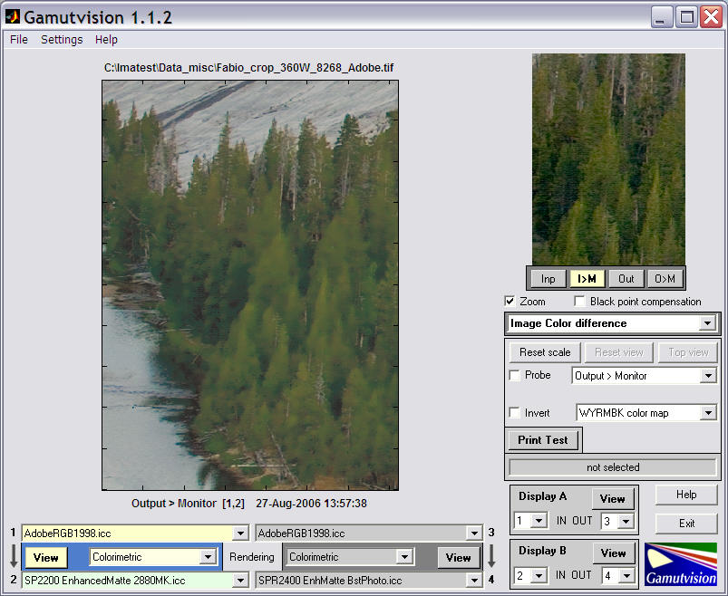
The smudging is also obvious when the display option is set to L* (output) with Grayscale color map. Hence we can be quite certain that the problem involves L* (luminance).
The Image Color difference display has a Probe that allows you to examine individual pixels of the image (which is usually reduced in size from the original to speed calculations). The Probe, shown below, left, is turned on by checking the Probe box in the display options area. Either of the images can be probed. The Probe is turned off when you click outside an image. The left side of the probe display contains the input color (on top) and the output color (on bottom). The smudged colors are relatively dark unsaturated greens and browns. Input L* values vary from about 26 to 40, but output values tend to cluster around 40: clear evidence that the smudging is caused by tonal (L*) compression.
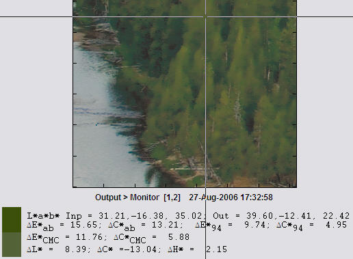
The usual gamut surface views for saturated colors show few clues. For example, the 3D L*a*b* view for S(HSL) = 1, below left (rotated to display the colors of interest), shows no indication of the problem. But the 3D L*a*b* view for S(HSL) = 0.2, below right (note different a*, b* scaling), shows something suspicious: a flattening of the contour for darker colors, which equates to a severe loss of contrast. This is more apparent in the 3D L* (output) display below.
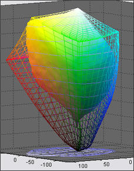 S(HSL) = 1 |
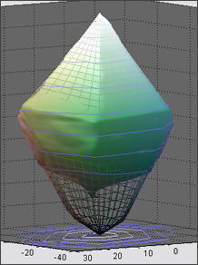 S(HSL) = 0.2 |
We've learned a few things from studying the smudging problem, most importantly,
| The smudging problem is a rare occurrence; it depends on a specific interaction between the image values and the ICC profile. It is not easy to preview with standard test patterns, all of which vary HSL Hue H(HSL) and either HSL Saturation S(HSL) or Lightness L(HSL), keeping the third parameter constant. |
The best display for viewing the cause of the problem is L*(output), which isn't actually a color difference. We begin by illustrating L*(output) for maximum saturation S(HSL) = 1. This corresponds to the device gamut. Note: this plot is a perfectly flat tilted sheet when L*(input) is selected (mostly as a check).
Notes on the display. Light has been checked to turn on the light. This emphasizes the contours; surfaces are featureless if Light is turned off. The 3d h*L* axes has been selected for the clearest visualization. Image lightness = 0.1 lightens the image slightly from its true value: this makes the contour lines more visible.
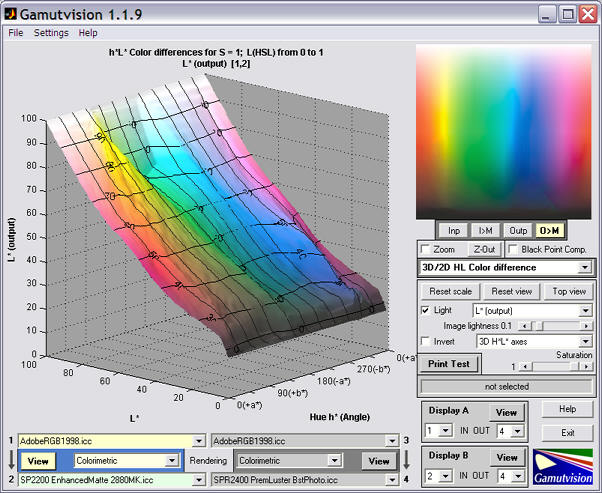
There are two areas where green contrast (the slope of the surface) is lower than average: in the highlights (L*(input) around 80) and in dark regions (L*(input) from about 10 to about 35). The highlight bump is unrelated to the smudging problem. Although the contrast reduction is of some concern, it may not be enough to account for the severity of the problem. Also, the smudged regions are relatively unsaturated. We need to look at lower values of saturation, S(HSL): inside the gamut boundary.
The plot on the right is for S(HSL) = 0.3. The irregularities in the brighter areas, above L*(output) = 0.4 have all but disappeared, but the plateau (low contrast region) from L*(input) from about 10 to about 40— especially for greens— is considerably more pronounced. The plateau is higher for the browns, and there is an irregular transition. These irregularities are significant, and they change quite a lot, for S(HSL) between 0.1 and 0.4. Any of these features could account for the smudging. The picture below is for the Epson R2400, same paper, "Best" profile. This combination has little smudging. A significant plateau is present, but the surface is much more regular. 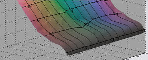 |
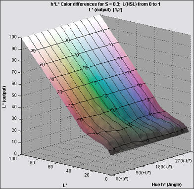 |
The low L* behavior for S(HSL) = 0.3, i.e., the plateau, is not what one would expect with no Black Point Compensation (BPC). But when S(HSL) is reduced to 0.05 (very faint colors), the tonal response changes quite dramatically, resembling the expected response curve described in the BPC page. This rapid change of density with S can certainly cause print quality problems; it could be related to the smudging. The change is much less dramatic for the R2400, which does not have a smudging issue. |
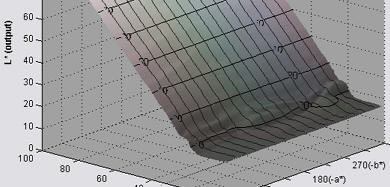 |
The smudging problem can be reduced by turning on BPC (checking the box). This doesn't entirely eliminate it: it's still visible although it's less offensive. S(HSL) = 0.3 is shown on the right. |
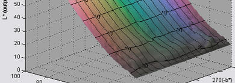 |
The profile for Hahnemuehle's highly-regarded Photo Rag, HFA2400PhotoRag308MK.icc, is just about perfect at S(HSL) = 0.3 with BPC turned on. It shows only a trace of the problem with BPC off: it has no smudging. I wish I could say it was perfect in all regards, but it shows some serious irregularities in middle blues and magentas for S(HSL) larger than about 0.4. It's not easy to find the perfect profile. |
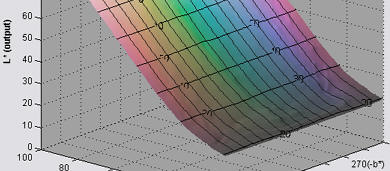 |
General observation: In addition to the plateau, and the difference in the plateau level for greens and browns, the smoothness and regularity of the profile response seems to play a role. The offending profile has a rougher response with more irregularities than any of the profiles that don't smudge. Smoothness and regularity are definite virtues in profiles.
The Black & White CIELAB plot, Output L*, a*, b*, and c* (chroma) vs. input L*, shown on the right zoomed in slightly, sheds light on the problem. This plot not only contains the grayscale response curve, it contains curves (output vs. input L*) for the primary colors: R, Y, G, C, B, and M with saturation S(HSL) set by the slider. These curves contain similar (but slightly less) information than the 3D L* output curves (above), but they update much more quickly, hence are more useful for diagnosing problems. They also show up irregularities and "plateaus" in luminance response very clearly. More details on this plot can be found in Gamutvision displays. |
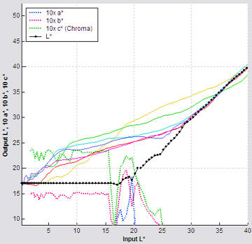 Epson R2400 (no smudging) |
ΔE*94 is an excellent color metric, better than the familiar ΔE*ab because it gives less weight to chroma differences for saturated colors, and hence corresponds more closely to the eye's perception. Here are two ΔE*94 displays: the Epson 2200, (Relative) Colorimetric intent with BPC off and the R2400 with the same settings. The R2400 does not suffer from smudging.
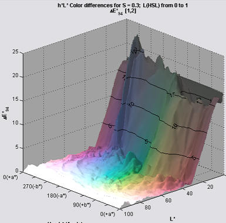 Epson 2200 (with smudging) |
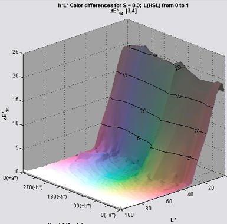 Epson R2400 (no smudging) |
The key difference is that the R2400 profile is smoother and more regular, especially in the area of interest— dark browns and greens. This seems to be a characteristic of profiles that don't smudge.
It's not easy to see the cause of the smudging from the test patterns, but there are a few strong indicators. The offending Epson 2200 profile
All these factors contribute to the smudging; it's hard to say which dominates. Profiles that didn't smudge sometimes had plateaus, but they all had smoother, more regular response in both the L* and ΔE*94 displays.
Bottom line: ICC profiles are improving, but they're still far from perfect. Gamutvision allows you to probe their interior, much like an MRI or CAT scan allows you to probe the body' interior. It's a new tool; there is much to learn.